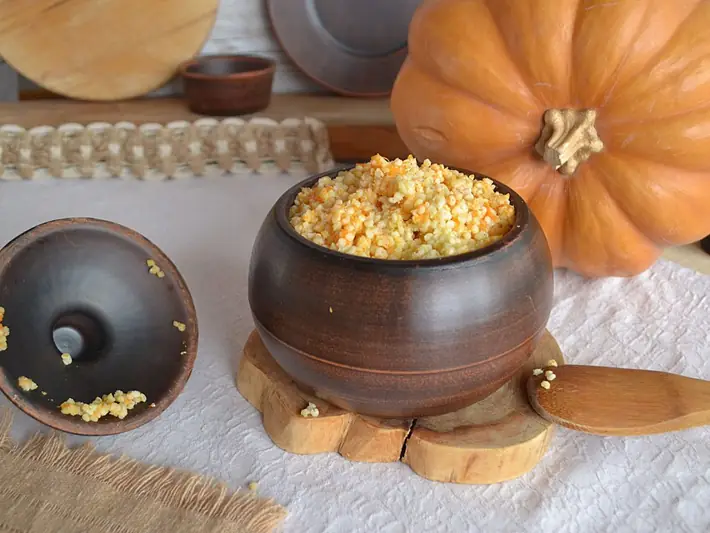

Фото: Samurai2593, CC BY-SA 4.0

Пшённая каша с тыквой
Сладкая пшённая каша на молоке с мягкой тыквой
45 мин4 порц.290 ккал на порциюБ 9 · Ж 9 · У 43Русская кухня
Продукты на 4 порц.
- Пшено0,75 стак.
- Тыква300 г
- Вода1 стак.
- Молоко3 стак.
- Сахар1,5 ст. л.
- Сливочное масло20 г
- Соль1 щеп.
Как готовить
- Промойте пшено несколько раз, последний раз горячей водой. Это убирает горечь.
- Тыкву очистите и нарежьте кубиком 1 см.
- Положите тыкву в кастрюлю, залейте водой и варите на среднем огне 10 минут до мягкости.
- Влейте молоко, доведите до кипения, всыпьте пшено, соль и сахар.
- Варите на слабом огне под крышкой 25 минут, помешивая каждые 5 минут, чтобы не пригорело.
- Каша готова, когда крупа мягкая и разварилась. Добавьте масло и дайте постоять под крышкой 10 минут.
Совет. Пшено горчит, если его плохо промыть или оно старое. Берите ярко-жёлтое пшено: тусклое и сероватое обычно уже залежалось.